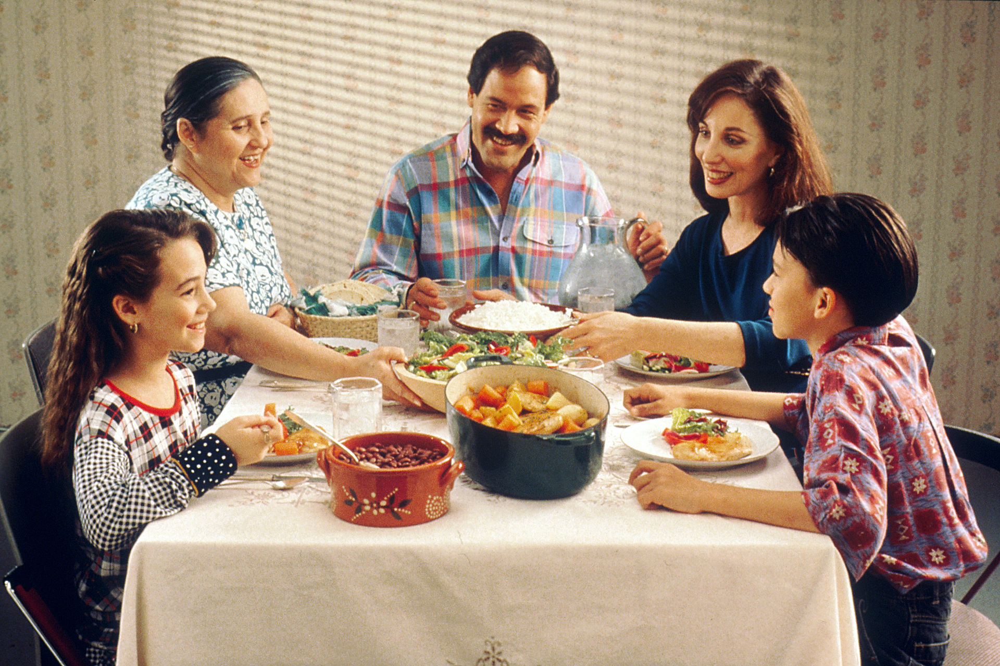
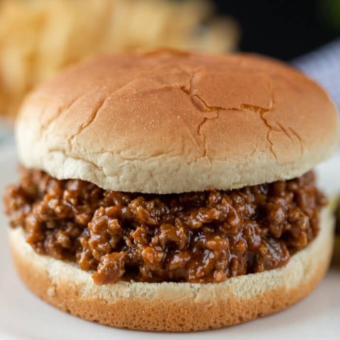

Recipes for Eating Family Style
Lasanga
A pasta dish made from flat sheets of pasta with mozzarella and ricotta cheese, with meat and tomato sauce.

Sloppy Joes
A sandwich consisting of ground beef and onions in a tomato-based sauce served on a hamburger bun.
Pan-Fried Pork Chops
A simple dish made from fried pork in seasonings and flour.